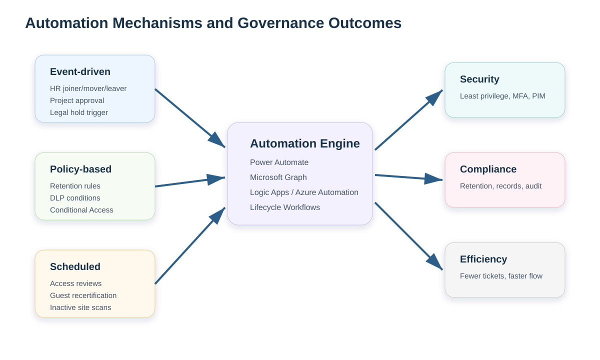
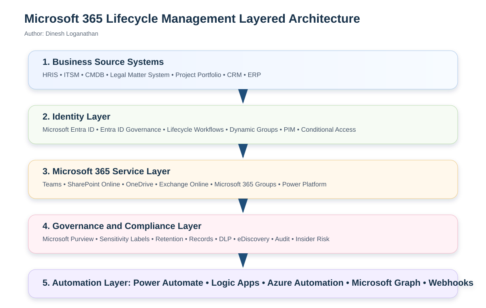
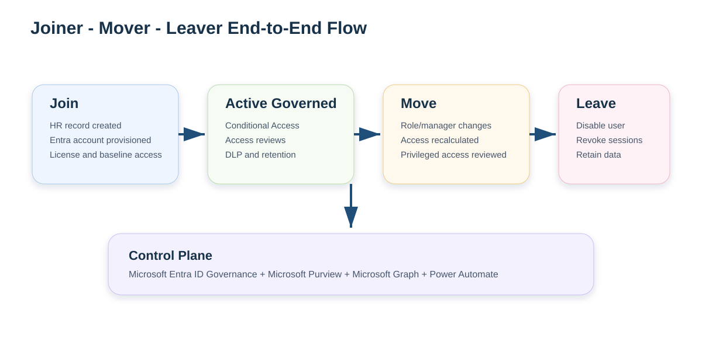
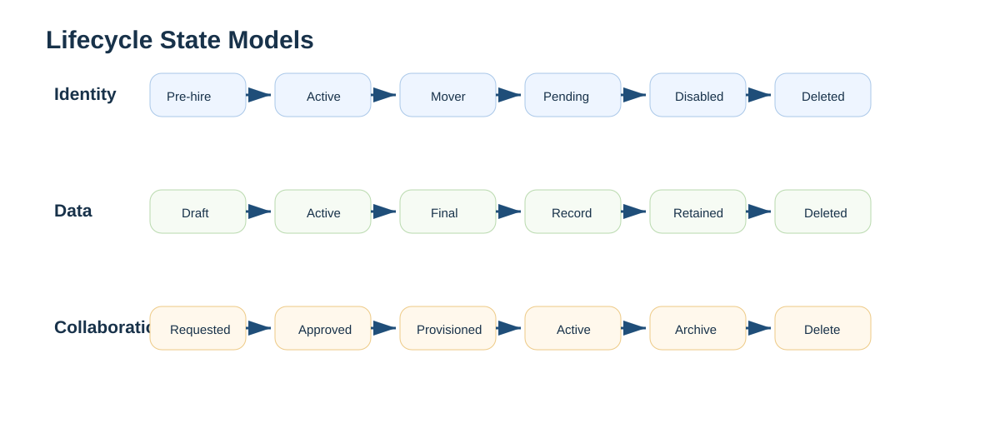
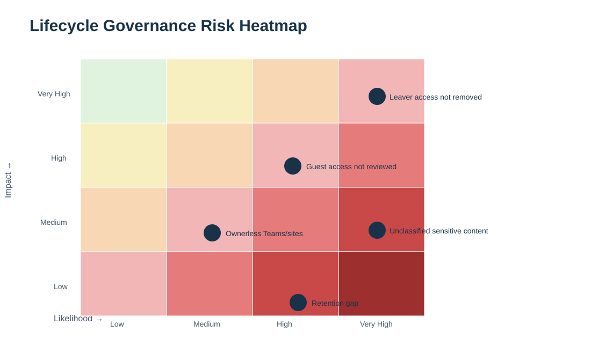

Executive Overview
An Automated Microsoft 365 Lifecycle Management System is an enterprise governance architecture that manages identities, data, collaboration spaces, access, and compliance obligations from creation through retirement.
It replaces ad hoc manual administration with policy-driven, event-driven, and auditable automation across Microsoft Entra ID, Microsoft Purview, Microsoft Teams, SharePoint Online, Exchange Online, Power Platform, Microsoft Graph, and service management systems.
Join, Move, Leave
Create, retain, archive, delete
Teams, SharePoint, Groups
Access, compliance, audit
Core Themes
Identity Management
Controls employee, contractor, guest, and privileged identity state through Microsoft Entra ID, Lifecycle Workflows, dynamic groups, licensing, Conditional Access, PIM, entitlement management, and access reviews.
- HR-driven user provisioning
- Joiner, mover, leaver workflows
- Least privilege and role-based access
- Guest and external identity governance
Data Governance
Controls business data from creation to final disposition using Microsoft Purview sensitivity labels, retention labels, records management, DLP, audit, eDiscovery, and auto-classification.
- Classify sensitive and regulated data
- Retain records defensibly
- Delete obsolete data under policy
- Support legal holds and investigations
Collaboration Governance
Manages lifecycle and ownership of Teams, SharePoint sites, Microsoft 365 Groups, OneDrive content, Planner, and related collaboration resources.
- Controlled workspace creation
- Owner accountability
- Group expiration and renewal
- Archive or delete inactive resources
Security and Compliance
Continuously validates access and data controls with Conditional Access, PIM, Access Reviews, DLP, Insider Risk, Purview Audit, eDiscovery, and Compliance Manager.
- Reduce excessive privilege
- Monitor risky activities
- Produce audit evidence
- Meet regulatory obligations
Technology Mapping
| Theme | Microsoft Technology | Enterprise Role |
|---|---|---|
| Identity lifecycle | Microsoft Entra ID | Central identity provider for users, groups, devices, apps, service principals, authentication, authorization, and Conditional Access. |
| JML automation | Microsoft Entra Lifecycle Workflows | Automates joiner, mover, and leaver tasks based on employment state, dates, and identity attributes. |
| Access governance | Microsoft Entra ID Governance | Provides lifecycle workflows, entitlement management, access packages, approvals, expirations, and access reviews. |
| Privileged access | Microsoft Entra Privileged Identity Management | Reduces standing admin access using just-in-time activation, approval, justification, MFA, and review. |
| Data lifecycle | Microsoft Purview Data Lifecycle Management | Applies retention policies and labels to preserve required content and delete obsolete information. |
| Records | Microsoft Purview Records Management | Supports record declaration, disposition review, immutable retention, and retention schedule enforcement. |
| Information protection | Microsoft Purview Information Protection | Applies sensitivity labels, encryption, content markings, container labels, and auto-labeling rules. |
| Collaboration | Microsoft Teams, SharePoint Online, Microsoft 365 Groups | Provides team workspaces, file storage, group-based access, channels, and content collaboration. |
| Workflow | Power Automate, Logic Apps, Azure Automation | Orchestrates approvals, notifications, lifecycle actions, remediation, and cross-system integration. |
| Programmability | Microsoft Graph API / Graph PowerShell | Automates lifecycle operations for users, groups, Teams, sites, licenses, roles, and reporting. |
Lifecycle Stages Breakdown
Join / Create
HR creates worker, project is approved, file is created, Team or site is requested. Baseline policies, labels, and access are applied.
Move / Modify
Role, department, manager, sensitivity, ownership, or project status changes. Access and governance state are recalculated.
Active / Governed
Conditional Access, access reviews, DLP, retention, audit, guest review, renewal, and ownership attestation operate continuously.
End-of-Life
Disable, revoke, archive, retain, disposition, delete, and preserve audit evidence according to policy and legal obligations.
Benefits and Risks
Benefits
- Faster onboarding and fewer service desk tickets.
- Reduced orphaned accounts, ownerless workspaces, and residual access.
- Consistent retention, classification, records management, and audit evidence.
- Improved external sharing and guest governance.
- Better operational scalability for large Microsoft 365 tenants.
Risks Without Lifecycle Management
- Former employees retain access after departure.
- Users accumulate permissions over time.
- Unmanaged Teams and SharePoint sprawl increases cost and risk.
- Data is retained too long, deleted too early, or not discoverable.
- Audit, eDiscovery, and compliance evidence is incomplete.
Automation Mechanisms Breakdown

Event-Driven Automation
Triggered by authoritative business events: HR joins, role changes, terminations, project approvals, legal holds, or workspace requests.
- New hire creates Entra account
- Termination disables account
- Project approval creates Team/site
- Legal matter applies hold
Policy-Based Automation
Evaluates resources against governance rules and enforces controls continuously.
- Conditional Access
- Sensitivity labels
- DLP rules
- Retention labels and policies
Scheduled Automation
Runs periodic governance checks and recertifications.
- Quarterly privileged access reviews
- Monthly guest reviews
- Weekly ownerless site checks
- Daily terminated user remediation
AI-Driven Classification
Uses sensitive information types, trainable classifiers, and risk signals to classify, protect, retain, or investigate content.
- Auto-labeling
- Insider risk signals
- Recommended access removals
- Classification-driven policies
Automation Workflow Catalog
| Workflow | Trigger | Primary Services | Actions | Evidence Produced |
|---|---|---|---|---|
| New hire onboarding | HR record created / start date reached | HRIS, Entra ID, Lifecycle Workflows, Power Automate | Create account, assign manager, add groups, assign licenses, notify manager, require MFA. | Provisioning log, workflow log, license assignment, audit trail. |
| Role change remediation | Department, manager, job code, or location changes | Entra ID, Dynamic Groups, Entitlement Management | Remove old access, request new access, trigger access review, update team memberships. | Attribute change log, approval record, access review decision. |
| Termination/offboarding | Termination date or HR inactive status | Entra ID, Exchange, OneDrive, Teams, SharePoint, Graph | Disable account, revoke sessions, remove groups, transfer ownership, retain mailbox/OneDrive. | Leaver workflow log, access removal record, retention evidence. |
| Workspace provisioning | Approved Team/site request | Power Automate, Graph, Teams, SharePoint, Purview | Create Team/site, assign owners, apply naming, label, retention, and external sharing controls. | Request, approval, provisioning record, owner accountability record. |
| Guest access review | Scheduled quarterly or sponsor change | Entra Access Reviews, Teams, SharePoint | Ask owners/sponsors to confirm external users; remove denied or expired guests. | Reviewer decisions, removal actions, guest risk report. |
| Inactive site lifecycle | Site inactivity threshold reached | SharePoint Advanced Management, Power Automate | Notify owners, renew, archive, restrict, or delete according to policy. | Owner attestation, archive action, deletion or renewal log. |
| Data disposition | Retention period expires | Microsoft Purview Records Management | Route disposition review, approve deletion, preserve evidence, delete eligible content. | Disposition review history and retention record. |
Comprehensive Enterprise Matrix
This table maps governance themes to lifecycle stages, technologies, automation mechanisms, examples, and business outcomes.
| Theme | Lifecycle Stage | Technology | Automation Mechanism | Example | Business Outcome |
|---|---|---|---|---|---|
| Identity | Join | HRIS + Microsoft Entra ID | HR-driven provisioning | HR creates new employee; Entra user is created with manager, department, and job code. | Consistent day-one readiness. |
| Identity | Join | Lifecycle Workflows | Event-driven workflow | Before start date, manager receives onboarding tasks and user receives baseline access. | Reduced onboarding tickets. |
| Identity | Join | Dynamic Groups | Attribute-based rules | Finance users join Finance baseline group automatically. | Role-aligned standard access. |
| Identity | Move | Entra ID Governance | Access recalculation | Sales access removed when user transfers to Legal. | Prevents privilege accumulation. |
| Identity | Active | Conditional Access | Policy-based enforcement | Require MFA and compliant device for SharePoint access. | Reduced unauthorized access. |
| Identity | Active | PIM | Just-in-time access | Admin activates role for two hours with approval. | Minimized standing privilege. |
| Identity | Leave | Lifecycle Workflows + Graph | Leaver automation | Disable account, revoke sessions, remove groups, transfer ownership. | Prevents post-employment access. |
| Data | Create | Purview Information Protection | Sensitivity labeling | Confidential document is labeled and encrypted. | Protection begins at creation. |
| Data | Create | Purview Auto-labeling | Content-based classification | Files containing regulated identifiers are automatically labeled. | Reduced reliance on manual classification. |
| Data | Active | Purview DLP | Policy-based prevention | External email with sensitive data is blocked or warned. | Reduced data leakage. |
| Data | Active | Retention Policies | Location or label-based retention | Teams chats retained for defined business period. | Consistent compliance retention. |
| Data | Move | Records Management | Record declaration | Final contract is declared as a record. | Defensible record control. |
| Data | End-of-life | Disposition Review | Approval workflow | Expired record routed to records manager for disposal. | Defensible deletion. |
| Collaboration | Create | Teams + SharePoint + Groups | Controlled provisioning | Project approval creates Team, SharePoint site, Planner plan, owners, and labels. | Standardized collaboration. |
| Collaboration | Create | Power Automate | Approval and orchestration | Sensitive Team request routes to data owner and security. | Governance before creation. |
| Collaboration | Active | Group Expiration | Renewal policy | Owners renew or allow group expiration. | Reduced stale groups. |
| Collaboration | Active | SharePoint Advanced Management | Inactive site policy | Inactive sites require owner confirmation. | Reduced site sprawl. |
| Collaboration | End-of-life | Microsoft 365 Archive | Archive workflow | Closed project site is archived. | Lower active storage footprint. |
| Security | Active | Access Reviews | Scheduled certification | Quarterly review of privileged roles and guest access. | Audit-ready least privilege. |
| Security | Active | Defender + Purview Audit | Monitoring and investigation | Unusual download activity after resignation is investigated. | Improved insider risk response. |
Architecture Explanation

Source Systems
HRIS, ITSM, CMDB, legal, project, CRM, and ERP systems provide authoritative lifecycle signals. Microsoft 365 should consume trusted business events rather than become the system of record for employment status, legal hold, or project approval.
Identity Layer
Microsoft Entra ID translates business events into identities, attributes, groups, licenses, access packages, Conditional Access decisions, PIM eligibility, and access reviews.
Service Layer
Microsoft Teams, SharePoint Online, OneDrive, Exchange, Microsoft 365 Groups, Planner, and Power Platform consume identity and governance state to deliver collaboration services.
Governance Layer
Microsoft Purview enforces sensitivity, DLP, retention, records, audit, eDiscovery, and compliance controls across content and communications.
Connection Wire Diagrams


Enterprise Connection Model
HRIS
└── authoritative worker attributes
└── Microsoft Entra ID
├── Dynamic Groups
├── Lifecycle Workflows
├── Entitlement Management
├── Conditional Access
└── PIM
└── Microsoft 365 Services
├── Teams
├── SharePoint Online
├── OneDrive
├── Exchange Online
└── Microsoft 365 Groups
└── Microsoft Purview
├── Sensitivity labels
├── Retention labels
├── Records management
├── DLP
├── Audit
└── eDiscovery
└── Evidence, reports, and disposition outcomes
Charts and Visuals
Automation Coverage by Domain
Illustrative maturity targets for a highly automated enterprise environment.
Risk Heatmap

Manual vs Automated Lifecycle Management
| Dimension | Manual | Automated |
|---|---|---|
| Onboarding | Ticket-based, inconsistent, delayed | HR-triggered, repeatable, auditable |
| Role changes | Old access often remains | Access is recalculated based on authoritative attributes |
| Offboarding | Risk of missed access and delayed removal | Account disabled, sessions revoked, memberships removed |
| Workspace creation | Uncontrolled or admin-heavy | Request, approval, template, labels, owners, retention |
| Data classification | User-dependent | Default, recommended, and automatic labeling |
| Access reviews | Spreadsheet-driven | Scheduled, system-recorded, auditable |
Real-World End-to-End Scenario
Employee Onboarding → Role Change → Offboarding
Financial Analyst joins
HR creates employee record. Entra ID provisions account, groups, license, MFA requirements, and baseline Finance access. Teams and SharePoint memberships are assigned.
Active employee
Conditional Access, DLP, retention policies, sensitivity labels, audit, and access reviews operate continuously.
Becomes Finance Systems Manager
Job code changes. Old analyst access is removed. New manager-level and privileged access is approved and made eligible through PIM.
Employee exits
Account is disabled, sessions revoked, groups removed, ownership transferred, mailbox and OneDrive retained, and compliance evidence preserved.
Scenario Outcome Map
| Stage | Systems | Automation | Outcome |
|---|---|---|---|
| Onboarding | HRIS, Entra ID, Lifecycle Workflows, Teams, SharePoint | Create user, assign groups/licenses, notify manager, enforce MFA. | Day-one productivity with baseline security controls. |
| Role Change | HRIS, Entra ID Governance, PIM, Teams, SharePoint | Update attributes, recalculate access, remove old access, approve new elevated access. | Access follows role without privilege accumulation. |
| Governed State | Purview, Defender, Entra, SharePoint, Teams | DLP, retention, audit, access reviews, guest review, owner attestation. | Continuous compliance and least privilege. |
| Offboarding | HRIS, Entra ID, Graph, Exchange, OneDrive, Teams, SharePoint, Purview | Disable, revoke sessions, remove memberships, transfer ownership, retain data. | No post-employment access and no loss of business records. |
Best Practices and Governance Recommendations
1. Establish authoritative sources
Use HRIS for employment status, legal systems for holds, project systems for workspace triggers, ITSM for approval records, and Purview for classification and records policy.
2. Define policy before automation
Automate only after defining access models, naming standards, sensitivity taxonomy, retention schedule, guest governance, owner accountability, and exception handling.
3. Use metadata as the control plane
Department, job code, manager, location, employee type, workspace purpose, sensitivity, retention category, and owner fields should drive automation.
4. Govern owners, not just resources
Every Team, Microsoft 365 Group, and SharePoint site should have at least two owners, business accountability, renewal date, classification, and lifecycle state.
Target Operating Model
| Governance Body | Responsibilities |
|---|---|
| Identity Governance Board | Identity lifecycle, access reviews, privileged access, guest governance, and access package design. |
| Data Governance Council | Classification, retention, records, DLP, information protection, and data ownership policy. |
| Collaboration Governance Board | Teams, SharePoint, Microsoft 365 Groups, naming, templates, ownership, renewal, and archive rules. |
| Security Operations | Risky users, incidents, suspicious activity, privileged activity, and event monitoring. |
| Compliance and Legal | Records schedule, legal hold, eDiscovery, disposition review, and audit evidence. |
| Platform Engineering | Automation, Graph integrations, Power Automate, monitoring, error handling, and dashboards. |